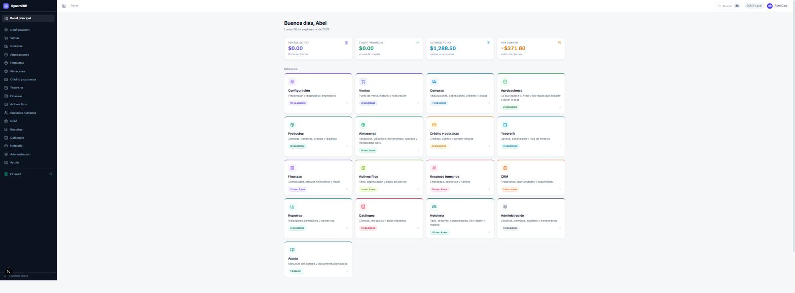
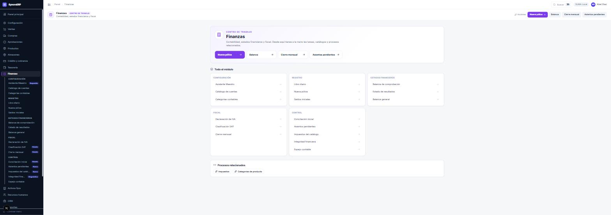
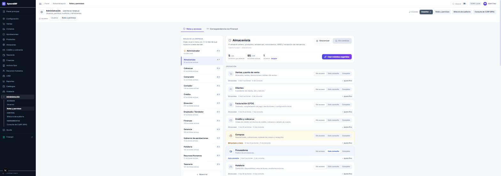

Qué es cada componente del sistema, cómo se comunican, cómo se accede y cómo está organizada la interfaz. Es la base común a las tres modalidades.
SyncroERP y Apache Fineract resuelven problemas distintos. Confundirlos lleva a buscar funciones donde no están, y es el malentendido más común durante las primeras semanas.
Registra la actividad de la empresa: compras, ventas, existencias, cuentas por cobrar y por pagar, nómina, activos y contabilidad. Su unidad de trabajo es el documento: una requisición, una orden de compra, una recepción, un ticket de venta, una póliza.
El principio que organiza todo el producto es el siguiente: cada documento que se confirma propaga por sí mismo todas sus consecuencias. Registrar una recepción de mercancía no se limita a anotar la llegada: incrementa la existencia en la ubicación indicada, actualiza el costo del producto, recalcula su precio de venta según el margen configurado y genera el asiento contable correspondiente. Ninguno de esos cuatro efectos se captura por separado.
La contrapartida es simétrica y conviene enunciarla desde el principio: un documento capturado con error propaga ese error a los cuatro sitios, y corregir uno de ellos sin corregir el documento deja el sistema inconsistente.
Registra productos financieros y su ciclo de vida: un cliente, un préstamo con su tabla de amortización, sus pagos, su mora, su castigo, y el asiento contable que cada uno de esos hechos produce. Es la herramienta de una institución cuyo negocio es el crédito: una sofom, una caja de ahorro, una financiera.
Apache Fineract es una plataforma de código abierto empleada en instituciones de microfinanzas en todo el mundo. En esta instalación opera como servicio independiente, con base de datos y usuarios propios.
| Capacidad | SyncroERP | Apache Fineract |
|---|---|---|
| Inventario, compras, ventas | Sí | No |
| Nómina, activos fijos, CFDI | Sí | No |
| Hotelería, recetas, punto de venta | Sí | No |
| Crédito a clientes | Crédito comercial | Crédito financiero completo |
| Tabla de amortización, mora, castigo, provisiones | Básico | Completo y configurable |
| Contabilidad | Con catálogo SAT y CFDI | Contabilidad propia, multi-oficina |
| Ahorro, depósitos, cuentas de captación | No | Sí |
| Segmentación | Multi-empresa | Multi-inquilino y multi-oficina |
El solape se produce en crédito y contabilidad. De ahí nacen las tres modalidades del capítulo 0.3, que determinan qué pantallas existen en cada instalación.
| Componente | Dirección | Función |
|---|---|---|
| SyncroERP — aplicación | puerto 3000 | Interfaz de usuario. No toma decisiones: consulta al servidor. |
| SyncroERP — servidor | puerto 4000 | Reglas de negocio, validaciones y contabilidad. |
| Base de datos del ERP | PostgreSQL | Registro de toda la actividad de la empresa. |
| Keycloak | servicio de SUMA | Directorio de identidad. Las contraseñas residen aquí exclusivamente. |
| Portal Fineract | puerto 3002 | Interfaz del core financiero. Sólo en modalidades con core. |
| Apache Fineract | puerto 8443 | Core financiero y su base de datos. Sólo en modalidades con core. |
| Consola SUMA | puerto 3010 | Alta de empresas cliente. Herramienta de SUMA, no del cliente. |
El ERP nunca invoca al core dentro de la operación que el usuario está ejecutando. Al registrar una venta a crédito, el ERP decide, guarda y responde; los hechos que el core debe conocer quedan anotados en una bandeja de salida y se despachan después, en segundo plano.
La consecuencia operativa es que la indisponibilidad del core no detiene la operación de la empresa: lo que se acumula es la bandeja, y se despacha cuando el servicio vuelve. El capítulo 22 describe cómo se supervisa.
La modalidad no es una preferencia de configuración: determina qué pantallas existen. Una empresa que no contrató el core no ve las pantallas del core —no vacías ni deshabilitadas: ausentes del menú—. Mostrar funciones no contratadas genera expectativas falsas y llamadas a soporte.
| Eje | Valores | Significado |
|---|---|---|
| Cartera ModoCartera |
APAGADO SOMBRA |
APAGADO — el crédito a clientes se gestiona íntegramente en el ERP. SOMBRA — cada hecho del crédito se replica al core y se concilia a diario, pero las decisiones las toma el ERP: disponible, bloqueo y saldo se resuelven con los datos del ERP. Es la modalidad de entrada a producción. |
| Contabilidad ModoContabilidad |
APAGADO ESPEJO |
APAGADO — la contabilidad reside únicamente en el ERP. ESPEJO — cada póliza registrada en el ERP se envía además al libro mayor del core. El asiento lo calcula siempre el ERP, único componente que conoce el IVA, el catálogo del SAT y el CFDI; el core recibe el reflejo. |
El eje de cartera tuvo un tercer grado —autoridad plena del core— que fue retirado. Delegar en un servicio remoto la decisión dentro de la transacción que reserva una línea de crédito elimina la garantía que impide comprometer dos veces el mismo disponible. Una institución que requiera que el core sea el titular del crédito no necesita un grado adicional de este eje: necesita operar en el core, esto es, la modalidad «sólo Fineract».
| Modalidad | Cartera | Contabilidad | Perfil de cliente |
|---|---|---|---|
| Sólo ERP | APAGADO | APAGADO | Comercio, distribución, hotelería, manufactura ligera. |
| ERP + Fineract | SOMBRA | ESPEJO o APAGADO | Empresa que además financia a sus clientes y requiere el historial y el cálculo del core sin dejar de operar en el ERP. |
| Sólo Fineract | no aplica | Institución financiera. Sin inventario que controlar. | |
La instalación fija un techo y cada empresa registra su decisión. El techo limita, no arrastra: si la instalación permite el espejo contable, ninguna empresa lo tiene activo hasta solicitarlo; si la instalación lo tiene apagado, ninguna empresa puede activarlo.
| Pantalla | Condición de existencia | Ubicación |
|---|---|---|
| Espejo contable | Contabilidad = ESPEJO | Finanzas › Control |
| Avisos del core | Cualquiera de los dos ejes activo | Crédito y cobranza › Configuración |
| Flujo de verificación | Verificación de identidad contratada | Crédito y cobranza › Configuración |
| Enlace al portal Fineract | Cartera activa y rol correspondiente | Pie del menú lateral |
| Control «Las pólizas llegaron al mayor externo» | Contabilidad = ESPEJO | Cierre mensual |
La identidad no reside en el ERP. Reside en Keycloak, el directorio de SUMA. El ERP no solicita contraseñas, no las almacena y no las modifica: al acceder, redirige a SUMA, SUMA verifica la identidad y devuelve al ERP una credencial firmada.
| Situación | Dónde se resuelve |
|---|---|
| Olvido de contraseña | En SUMA. El ERP carece de pantalla de recuperación por diseño, no por omisión. |
| Cambio de contraseña | En SUMA. |
| Segundo factor de autenticación | En SUMA. |
| Alta de un empleado | En el ERP, Recursos humanos › Empleados. El sistema prepara la identidad en el directorio y el correo de activación se emite desde allí. |
| Cambio de rol | En el ERP, Administración › Usuarios. El rol pertenece al ERP; la identidad, a SUMA. |
| Baja de una persona | Ambos sistemas: desactivar el usuario en el ERP y la identidad en SUMA. |
El ERP supera las ochenta pantallas. La interfaz está construida para presentar a cada usuario únicamente las que le corresponden.

| Zona | Contenido |
|---|---|
| Menú lateral | Los módulos del perfil. Al abrir uno se despliegan sus secciones, agrupadas por etapa: Operación, Control, Configuración. |
| Ruta de navegación | Panel › Módulo › Pantalla, en la cabecera. |
| Cabecera del módulo | Identifica el módulo y ofrece sus acciones frecuentes a la derecha. |
| Cuerpo | La pantalla activa. |
Cada módulo dispone de una portada denominada centro de trabajo: sin datos propios, reúne las acciones frecuentes del módulo y el índice completo de sus pantallas agrupadas por etapa.

Aparece al abrir una dirección que el rol no incluye. No indica un fallo del sistema ni un problema de datos: la pantalla no forma parte del perfil. Se solicita al administrador de la empresa, que puede concederla en Administración › Roles y permisos.
El acceso se reparte por módulos, no por pantallas individuales. Cada rol dispone de una plantilla que le asigna módulos en acceso completo, en consulta, o ninguno. El reparto detallado figura en el Anexo A.
| Rol | Ámbito |
|---|---|
| empleado | Mostrador: punto de venta, cobro, facturación, alta de clientes y cartera comercial. |
| almacenista | Almacén completo: recepción, existencias, movimientos, conteos y gestión por ubicaciones. |
| comprador | Requisiciones, cotizaciones, órdenes de compra y padrón de proveedores. |
| tesoreria | Saldos, movimientos bancarios, traspasos, conciliación y caja. |
| contador | Pólizas, cierres, CFDI, activos y catálogos fiscales. |
| finanzas | Contabilidad, tesorería, facturación, activos y catálogos financieros. |
| credito | Línea de crédito, verificación del cliente y originación. |
| cobranza | Cartera, cobros, estados de cuenta y crédito hotelero. |
| rrhh | Plantilla, puestos, asistencia, incidencias, vacaciones y nómina. |
| hoteleria | Disponibilidad, recepción, ama de llaves, crédito hotelero, recetas y auditoría nocturna. |
| gerencia | Supervisión operativa y firma de aprobaciones. |
| direccion | Igual que gerencia, con lectura adicional de la integración con el core. |
| gobierno | Define quién aprueba qué, desde qué importe y en qué orden. No firma ninguna aprobación. |
Existe además el rol administrador, que no pasa por la tabla de permisos y accede a todo. No corresponde a un puesto del organigrama: es una credencial de mantenimiento y conviene limitarla a una o dos personas.

Primero: la supervisión no captura. Gerencia y dirección alcanzan casi todas las pantallas, y casi todas en consulta. No es una limitación: conceder permisos de captura a quien supervisa diluye la trazabilidad de quién ejecutó cada operación.
Segundo: quien define las reglas no las ejecuta. El rol gobierno configura la matriz de firmas —qué procesos requieren aprobación, quién firma cada nivel y desde qué importe— y tiene vedada la acción de resolver aprobaciones. Si ese rol pudiera firmar, dejaría de ser un control y pasaría a ser un aprobador con capacidad de reescribir las reglas que lo limitan.
| Rol | Pantallas | Concentración |
|---|---|---|
| gerencia | 80 | RRHH (12), finanzas (12), hotelería (8), reportes (6) |
| finanzas | 56 | finanzas (15), RRHH (8), compras (5), créditos (5) |
| contador | 44 | finanzas (15), RRHH (5), compras (4), tesorería (4) |
| tesoreria | 37 | finanzas (12, mayoritariamente consulta), compras (5), créditos (5) |
| almacenista | 21 | inventario (8), almacenes (3), compras (3) |
| rrhh | 20 | RRHH (16) |
| credito | 16 | créditos (6), reportes (3) |
| comprador | 16 | compras (3), inventario (3), productos (2) |
| gobierno | 5 | aprobaciones y su configuración |
Que tesorería acceda a doce pantallas de finanzas en consulta responde al mismo principio: quien paga debe poder verificar qué paga, sin capacidad de contabilizarlo.